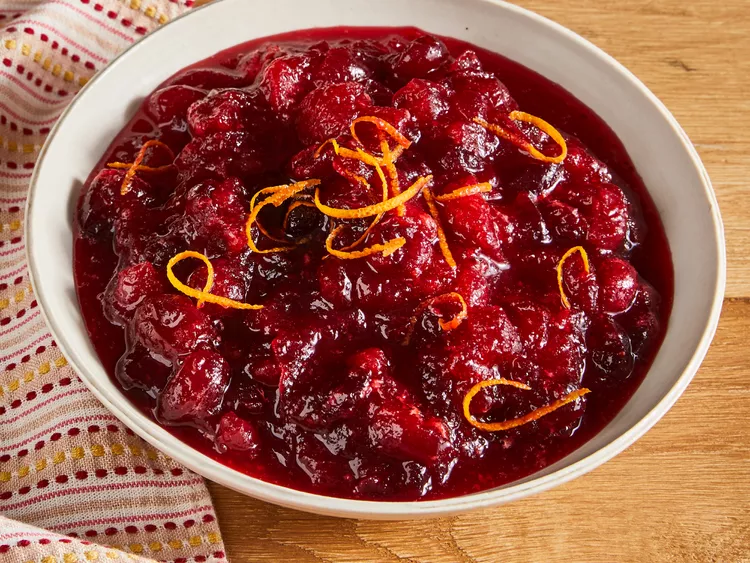

Cranberry Sauce

Description
This cranberry sauce recipe uses fresh cranberries, sugar, and orange juice to make a Thanksgiving classic.
Ingredients
- 12 ounces cranberries
- 1 cup white sugar
- 1 cup orange juice
Steps
- Step 1 Gather all ingredients.
- Step 2Dissolve sugar in orange juice in a medium saucepan over medium heat.
- Step 3Stir in cranberries and cook until they start to pop, about 8 to 10 minutes.
- Step 4Remove from heat and place sauce in a bowl. It will thicken as it cools.
- Step 5Enjoy!